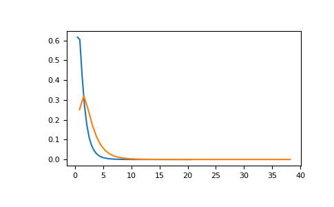

numpy.random.RandomState.noncentral_f¶
method
-
RandomState.noncentral_f(dfnum, dfden, nonc, size=None)¶ Draw samples from the noncentral F distribution.
Samples are drawn from an F distribution with specified parameters, dfnum (degrees of freedom in numerator) and dfden (degrees of freedom in denominator), where both parameters > 1. nonc is the non-centrality parameter.
Note
New code should use the
noncentral_fmethod of adefault_rng()instance instead; see random-quick-start.- Parameters
- dfnumfloat or array_like of floats
Numerator degrees of freedom, must be > 0.
Changed in version 1.14.0: Earlier NumPy versions required dfnum > 1.
- dfdenfloat or array_like of floats
Denominator degrees of freedom, must be > 0.
- noncfloat or array_like of floats
Non-centrality parameter, the sum of the squares of the numerator means, must be >= 0.
- sizeint or tuple of ints, optional
Output shape. If the given shape is, e.g.,
(m, n, k), thenm * n * ksamples are drawn. If size isNone(default), a single value is returned ifdfnum,dfden, andnoncare all scalars. Otherwise,np.broadcast(dfnum, dfden, nonc).sizesamples are drawn.
- Returns
- outndarray or scalar
Drawn samples from the parameterized noncentral Fisher distribution.
See also
Generator.noncentral_fwhich should be used for new code.
Notes
When calculating the power of an experiment (power = probability of rejecting the null hypothesis when a specific alternative is true) the non-central F statistic becomes important. When the null hypothesis is true, the F statistic follows a central F distribution. When the null hypothesis is not true, then it follows a non-central F statistic.
References
- 1
Weisstein, Eric W. “Noncentral F-Distribution.” From MathWorld–A Wolfram Web Resource. http://mathworld.wolfram.com/NoncentralF-Distribution.html
- 2
Wikipedia, “Noncentral F-distribution”, https://en.wikipedia.org/wiki/Noncentral_F-distribution
Examples
In a study, testing for a specific alternative to the null hypothesis requires use of the Noncentral F distribution. We need to calculate the area in the tail of the distribution that exceeds the value of the F distribution for the null hypothesis. We’ll plot the two probability distributions for comparison.
>>> dfnum = 3 # between group deg of freedom >>> dfden = 20 # within groups degrees of freedom >>> nonc = 3.0 >>> nc_vals = np.random.noncentral_f(dfnum, dfden, nonc, 1000000) >>> NF = np.histogram(nc_vals, bins=50, density=True) >>> c_vals = np.random.f(dfnum, dfden, 1000000) >>> F = np.histogram(c_vals, bins=50, density=True) >>> import matplotlib.pyplot as plt >>> plt.plot(F[1][1:], F[0]) >>> plt.plot(NF[1][1:], NF[0]) >>> plt.show()
